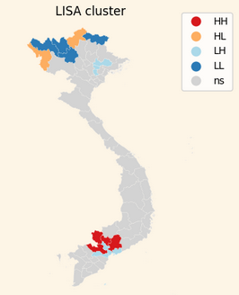
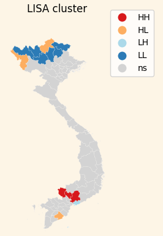
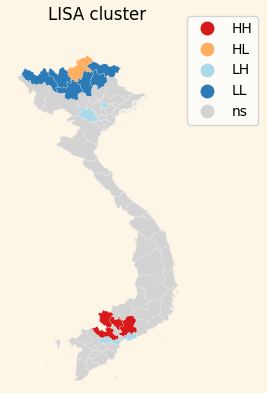
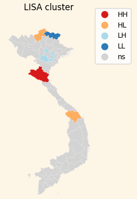
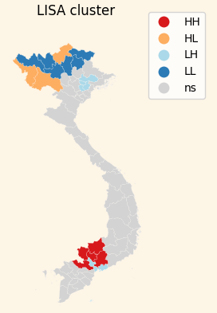

This ESDA focuses on how land use, income, population, and employment are distributed across the country — and how these patterns reflect historical and economic shifts.
Using autocorrelation metrics, we uncover clusters of prosperity and vulnerability. This kind of spatial insight is essential for understanding where interventions may be needed — and where resilience already exists.
These results serve as a compact primer for understanding Viet Nam’s socio-economic geography — and provide a foundation for discussing food security, development, and regional inequality.
Provinces in southern Viet Nam — particularly those with strong enterprise activity and income — tend to form consistent hotspots. In contrast, northern and mountainous provinces often appear as coldspots across multiple indicators. These patterns mirror historical development trajectories, including post-war reconstruction, foreign investment flows, and industrialization policies.
Food security, while not measured directly here, is strongly influenced by these spatial dynamics. The findings highlight the need for regionally tailored approaches: supporting agricultural resilience in underdeveloped areas, managing urban expansion, and ensuring equitable employment opportunities as Viet Nam transitions toward a service- and industry-based economy.
📍 Spatial autocorrelation (Moran’s I = 0.31) reveals weak to moderate clustering in agricultural land use across AUs.
📍 Central Highlands (Dak Lak, Gia Lai) emerged as consistent hotspots for agriculture over the 2012–2021 period.
📍 Coldspots are found in northern provinces (e.g., Bac Kan, Ha Nam, Da Nang) due to urbanization, forestry focus, or limited arable land.
📍 LISA clusters (Hi-Hi, Hi-Lo, Lo-Hi, Lo-Lo) highlight localized strengths or outliers in land use intensity.
📍 SE provinces like Binh Duong and Dong Nai balance industrial growth with sustained agricultural investment.
📍 Northern mountainous areas show high forestry coverage but low agricultural density — raising potential food security concerns.
📍 Land use patterns correlate with income, enterprise presence, and population — revealing deeper regional inequalities.
📍 Interpretation of LISA clusters must be paired with real-world context to avoid misreading statistically “insignificant” zones.
| Map | Pattern | Cluster Location |
|---|---|---|
|  | Hi-Hi (Hotspot) | SE: Tay Ninh, Long An, Binh Duong, Binh Phuoc, Dong Nai |
| Hi-Lo | NMM: Dien Bien, Ha Giang; MRD: Soc Trang, Kien Giang | |
| Lo-Hi | NMM: Bac Giang; SE: Ba Ria–Vung Tau, HCMC; MRD: Tien Giang | |
| Lo-Lo (Coldspot) | NMM: Lai Chau, Lao Cai, Yen Bai, Cao Bang; Northern Central: Khanh Hoa |
📍 SE AUs (Tay Ninh, Long An, Binh Duong, Binh Phuoc, Dong Nai) appeared as hotspots in 5 of 6 attributes — showing a strong link between high agriculture land use and enterprise presence.
📍 These SE AUs combine urbanization with sustained agricultural investment, and exhibit high income, employment, and enterprise density.
📍 Ba Ria–Vung Tau, though part of SE geographically, forms a distinct cluster — indicating a unique enterprise-agriculture relationship.
📍 NMM AUs (Lai Chau, Lao Cai, Yen Bai, Tuyen Quang, Bac Kan, Cao Bang) form consistent coldspots — showing low enterprise activity despite large rural/agriculture footprints.
📍 LISA clustering in these areas reveals a northern belt of low enterprise presence correlated with low agricultural land use — driven by mountainous terrain and forestry dominance.
📍 Nghe An (NCCC) shows that high rural population correlates with moderate agriculture land use, but enterprise activity remains limited.
📍 These spatial clusters suggest that enterprise growth aligns more with urban-agriculture synergy (as in SE) than with rural-dominant zones like NMM or NCCC.
📍 Interpreting enterprise-agriculture clusters helps identify areas of untapped potential or structural constraints to development.
| Map | Cluster Location | |
|---|---|---|
|  | Hi-Hi (Hotspot) | SE: Tay Ninh, Long An, Binh Duong, Binh Phuoc, Dong Nai |
| Hi-Lo | NMM: Dien Bien, Ha Giang; MRD: Soc Trang | |
| Lo-Hi | SE: Ba Ria-Vung Tau, HCMC; MRD: Tien Giang | |
| Lo-Lo (Coldspot) | NMM: Lai Chau, Lao Cai, Yen Bai, Cao Bang; Northern Central: Khanh Hoa |
| Map | Pattern | Cluster Location |
|---|---|---|
|  | Hi-Hi (Hotspot) | SE: Ho Chi Minh City, Ba Ria-Vung Tau, Dong Nai |
| Hi-Lo | NMM: Ha Giang, Lai Chau | |
| Lo-Hi | NMM: Bac Ninh, Hoa Binh, Bac Giang | |
| Lo-Lo (Coldspot) | North West: Cao Bang, Yen Bai |
📍 SE provinces show strong clustering of high agricultural land use with high total and urban population, indicating effective land-people synergy.
📍 Ba Ria–Vung Tau appears again as a unique cluster — maintaining high agricultural activity alongside dense urban population, but somewhat distinct from the SE group.
📍 NMM provinces (Lai Chau, Lao Cai, Yen Bai, Tuyen Quang, Bac Kan, Cao Bang) consistently form coldspots in both agriculture and population — suggesting sparse populations and limited agricultural intensification.
📍 Nghe An (NCCC) stands out with high rural population and significant agricultural land use — forming a rural-agricultural hotspot, though with weaker urban and enterprise dynamics.
📍 Spatial clusters show rural-heavy AUs often lack the infrastructure to translate agriculture into higher population retention or growth.
📍 Urban populations in SE correlate with high enterprise presence and intensified land use, reinforcing the role of cities in shaping agri-population dynamics.
📍 Rural-urban contrasts are especially visible in LISA results — with northern areas showing low urban population, despite extensive rural zones.
📍 These patterns reflect regional disparities in development, where population density aligns closely with economic opportunity and agricultural investment.
| Map | Pattern | Cluster Location |
|---|---|---|
|  | Hi-Hi (Hotspot) | Northern Central: Nghe An |
| Hi-Lo | NMM: Ha Giang; Central Coastal: Quang Nam | |
| Lo-Hi | Red River Delta: Hoa Binh, Ha Nam, Hung Yen, Bac Ninh, Vinh Phuc | |
| Lo-Lo (Coldspot) | North Midlands and Mountain Areas: Cao Bang |
| Map | Pattern | Cluster Location |
|---|---|---|

|
Hi-Hi (Hotspot) | SE: Tay Ninh, Long An, Binh Duong, Binh Phuoc, Dong Nai |
| Hi-Lo | NMM: Dien Bien, Ha Giang | |
| Lo-Hi | SE: Ba Ria-Vung Tau | |
| Lo-Lo (Coldspot) | North Midlands and Mountain Areas: Lai Chau, Lao Cai, Yen Bai, Tuyen Quang, Bac Kan, Cao Bang |
| Map | Pattern | Cluster Location |
|---|---|---|
|  | Hi-Hi (Hotspot) | SE: Tay Ninh, Long An, Binh Duong, Binh Phuoc |
| Hi-Lo | NMM: Dien Bien, Ha Giang | |
| Lo-Hi | SE: HCMC, Ba Ria Vung Tau | |
| Lo-Lo (Coldspot) | North West: Lai Chau, Lao Cai |
📍 SE provinces (e.g. Tay Ninh, Binh Duong) are hotspots for both agriculture and income — suggesting agricultural land supports or coexists with affluent economic conditions.
📍 NMM provinces (Lai Chau, Lao Cai, etc.) appear as coldspots in both agriculture and income — indicating low returns from agriculture, possibly due to terrain and reliance on forestry.
📍 Ha Noi & RRD provinces, despite being economically significant, do not appear as agri-income hotspots — likely due to lower agricultural activity.
📍 The correlation between land use and income is stronger in southern provinces, highlighting regional inequality.
📍 Income patterns confirm that affluent areas also tend to maintain substantial agricultural zones, especially when supported by urban-industrial growth.
| Map | Pattern | Cluster Location |
|---|---|---|

|
Hi-Hi (Hotspot) | MRD: An Giang, Kien Giang |
| Hi-Lo | NMM: Bac Giang, Thanh Hoa | |
| Lo-Hi | SE: Ba Ria-Vung Tau, HCMC | |
| Lo-Lo (Coldspot) | Central Coast: Khanh Hoa, Quang Ngai |
📍 MRD AUs (e.g. An Giang, Kien Giang) are agri-farm hotspots, showing strong spatial overlap between land use and farm density.
📍 Some AUs (e.g. Khanh Hoa, Quang Ngai) appear as coldspots, reflecting low farm presence and limited agriculture — possibly due to coastal or urban development pressures.
📍 Lo-Hi clusters like Ba Ria–Vung Tau indicate regions with low agriculture land use but relatively higher farm diversity or presence — suggesting specialization.
📍 Farm distribution is not always perfectly aligned with agriculture area — pointing to diverse land use strategies (e.g., high-value or niche farming).
📍 Areas with low farm density and low land use may require policy attention for food security and sustainable agriculture.